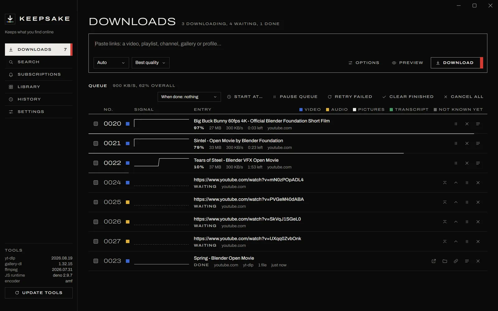
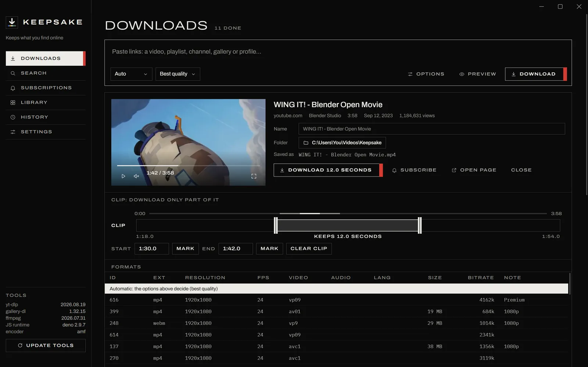
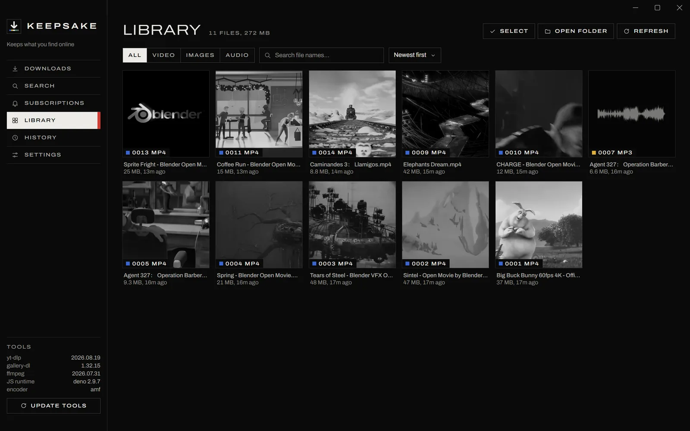
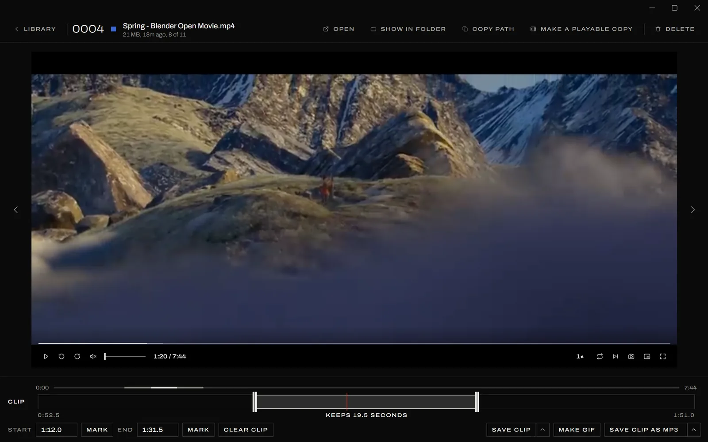

Keep What You Find Online
Keepsake is a free video, audio and gallery downloader for Windows. Paste a link from YouTube or more than a thousand other sites, and it saves the file to your Videos, Music or Pictures folder, ready to play.
For Windows 10 and 11, 64-bit. Free and open source under the MIT licence.

= 1244px) 1180px, calc(100vw - 32px)" width="1600" height="1000" fetchpriority="high" alt="Keepsake's Downloads page with three Blender films downloading, each drawing its speed as a line, and four more waiting.">What It Keeps
Keepsake downloads from every site yt-dlp and gallery-dl support, more than a thousand of them, including YouTube, YouTube Music, SoundCloud, Vimeo, Bandcamp, Twitch, Reddit and Instagram. Auto mode works out what a link is and takes the right thing, and each kind of download keeps its colour through the queue, the history and the library.
- Video
- The best original streams at up to 8K, merged without re-encoding. You can cap the resolution, prefer a codec, or ask for a copy that plays on anything.
- Audio
- MP3, M4A, Opus, FLAC or WAV, tagged with the artist, the album, the track number and square cover art.
- Pictures
- Whole galleries and profiles through gallery-dl, each in a folder of its own.
- Transcript
- A clean, readable transcript made from a video's subtitles.
See It Before You Take It
Preview a link to watch it, pick a format from the full table, rename it or choose its folder. Mark a stretch on the clip bar and only that part downloads.
The preview shows the exact file name it will save, and says so if you have downloaded it before.

= 960px) 760px, calc(100vw - 32px)" width="1600" height="1000" loading="lazy" alt="A preview of a Blender film with its player, a twelve-second clip marked, and the table of formats below.">Everything You Kept, in One Place
The library picks up each download as it finishes, with films, songs and pictures side by side. Thumbnails stay grey until you point at one.
Files open in a full player with speed control, subtitles, picture in picture and a key for every control, and it carries on where you left off.

= 960px) 760px, calc(100vw - 32px)" width="1600" height="1000" loading="lazy" alt="The library, a grid of eleven downloaded films and a song, each tile numbered with its kind.">Cut Out the Part You Want
Drag across the clip bar, or press Mark as it plays. The bar zooms in on the clip, so it cuts to a tenth of a second, and a song shows its waveform so the quiet and loud parts are easy to find.
Save the clip as it is, make a GIF from it, keep the frame on screen as a picture, or keep only the sound as MP3, M4A, Opus, FLAC or WAV.

= 960px) 760px, calc(100vw - 32px)" width="1600" height="1000" loading="lazy" alt="The player showing a mountain scene, with a clip of 19.5 seconds marked on the clip bar below it.">The Details
Clean Files
Tags, embedded links, camera data and the video ID in the name come off every file by default, without re-encoding it. Turn that off to keep what you choose.
A Queue That Holds
Pause and resume, reorder, retry or start at a set time. The queue is saved as it changes, so even a crash loses nothing.
Subscriptions
Follow a channel, playlist or profile, and new uploads download on a schedule into a folder of their own.
Signing In
Sign in to a site from Keepsake's own window, and downloads from that site use the session.
Links From Anywhere
Press Ctrl+Alt+D in any program to download the copied link, drop links on the window, or send a page from a bookmarklet.
Always Current
yt-dlp and gallery-dl update every week, yt-dlp can be rolled back if a new version misbehaves, and Keepsake installs its own updates.
Install
-
1
Download KeepsakeSetup.exe and open it. It installs for your account only, so it does not ask for an administrator.
-
2
If Windows says it protected your PC, choose More info and then Run anyway. It asks because the installer is not signed.
-
3
On its first start Keepsake fetches FFmpeg and Deno, which takes under a minute. Then paste a link.
Questions
- Is it free?
- Yes. There are no ads, accounts or limits, and the source is on GitHub under the MIT licence.
- Do I need Python or FFmpeg?
- No. Keepsake brings its own Python, and fetches FFmpeg and Deno by itself on its first start.
- Where do downloads go?
- Into Windows' own folders: videos to
Videos\Keepsake, audio toMusic\Keepsake, galleries toPictures\Keepsakeand transcripts toDocuments\Keepsake. Each one can be changed in Settings. - How does it stay up to date?
- yt-dlp and gallery-dl update every week, which is what keeps downloads working as sites change. Keepsake checks for its own new versions and installs them when it next starts.
- How do I uninstall it?
- From Installed apps in Windows Settings. Your downloads and settings are left where they are.
- Is it legal to download videos?
- That depends on the video and the site. Keep what you have the right to keep, such as your own uploads, work under a free licence, or what a site's terms allow.
- Does it run on a Mac or Linux?
- No, Keepsake is made for Windows 10 and 11.